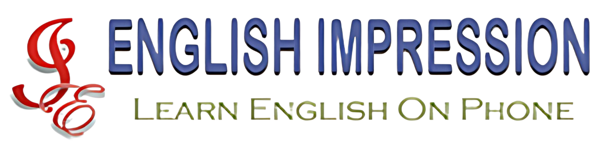
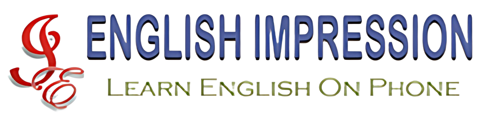

Counterfeit Detection — Bank Tellers Module
A specialized e-learning module for bank tellers to identify counterfeit currency with accuracy and confidence. It covered all denominations in circulation in India, with detailed guidance on security features and red flags aligned with RBI guidelines.
The module included interactive assessments that simulate real-world scenarios and reinforce key concepts through hands-on practice. The client appreciated the practical relevance, clean design, and easy on-the-job application.